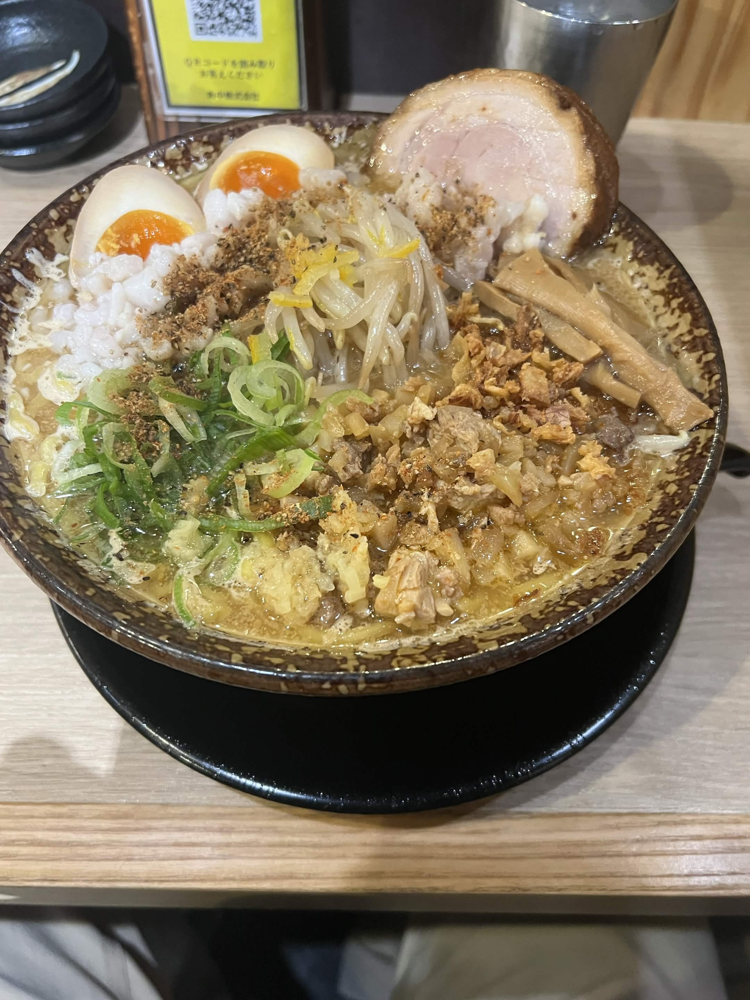
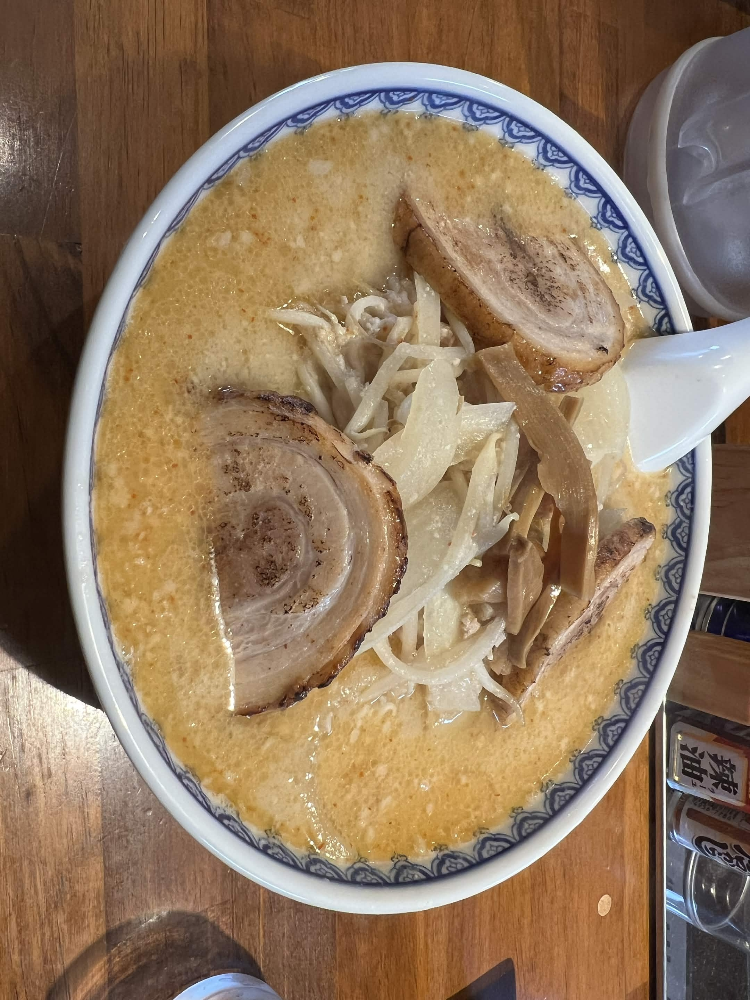
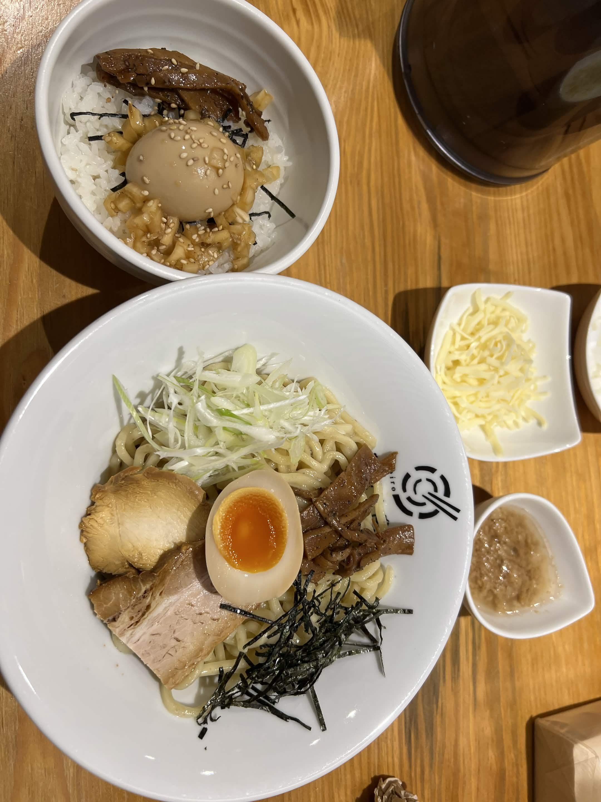
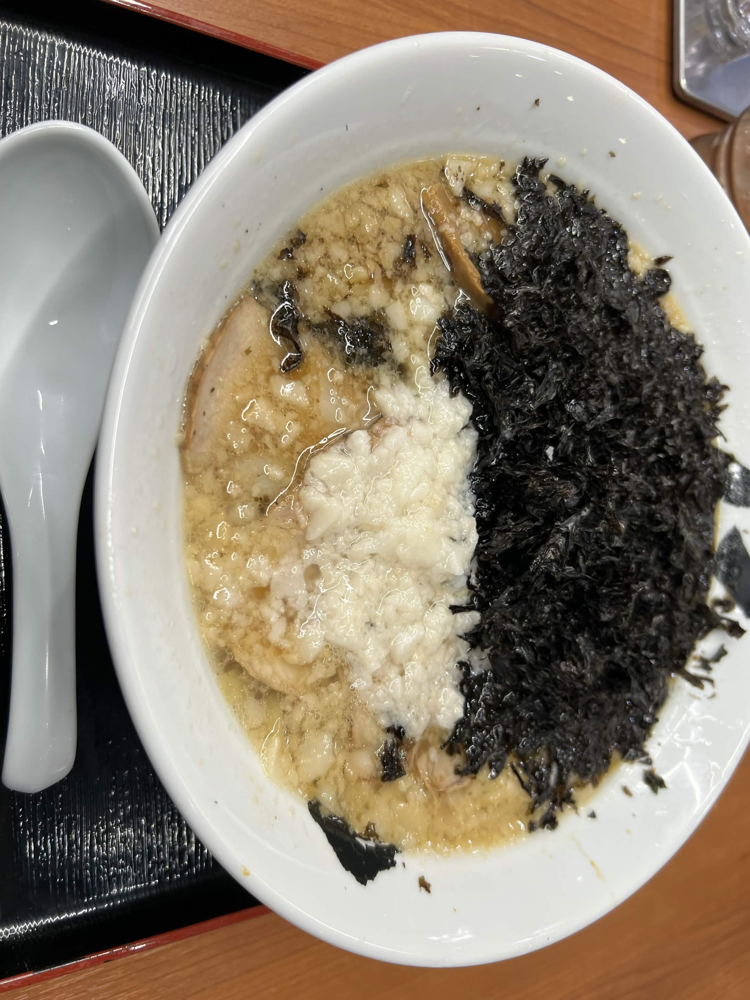

Research
The Breakfast Machine “Loraine”
この四つのラーメンは私が美味しいと記憶している四つです。上段は味噌ラーメンで左上がまごころ亭右上がミサ、左下は油そば十色、右下は背油ちゃっちゃラーメン潤です。




この四つのラーメンは私が美味しいと記憶している四つです。上段は味噌ラーメンで左上がまごころ亭右上がミサ、左下は油そば十色、右下は背油ちゃっちゃラーメン潤です。



